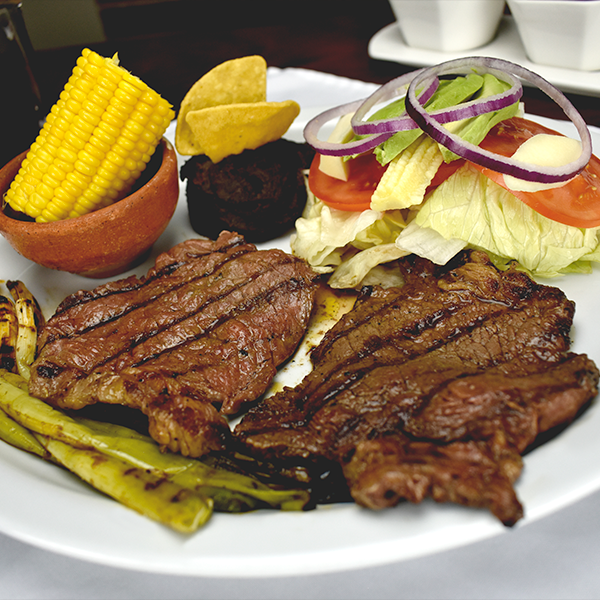

Churrasco

Description
Carne asada the guatemalan way
Delicious to share with your whole family
Ingredients
- Carne de res
- Longaniza
- Aguacate
- Arroz
- Tomate
- Cebollitas
- Papa
- Limon
- Silantro
- Sal de ajo
- Frijoles volteados
Steps
- Preparar un chirmol con el tomate y el silantro y la cebolla
- Azar la carne y longaniza y cebollitas
- Preparar el Guacamol